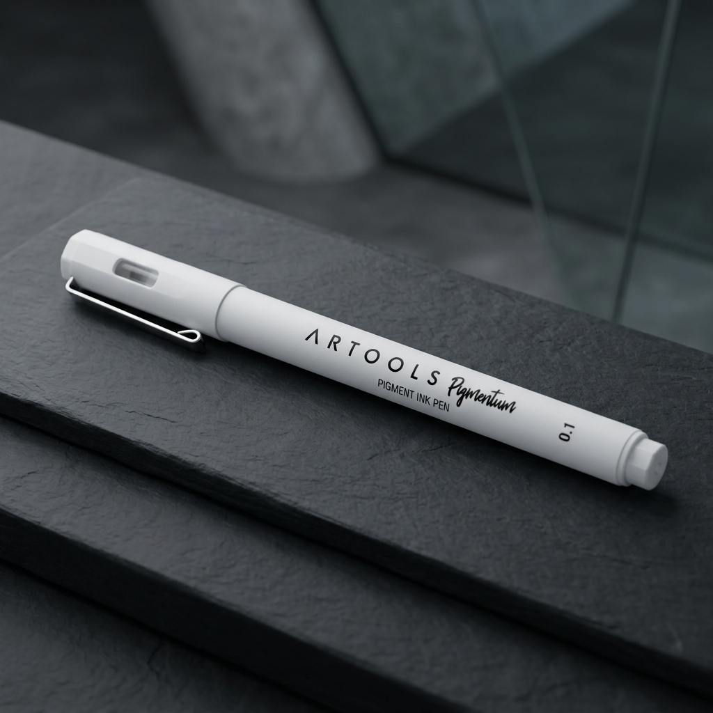
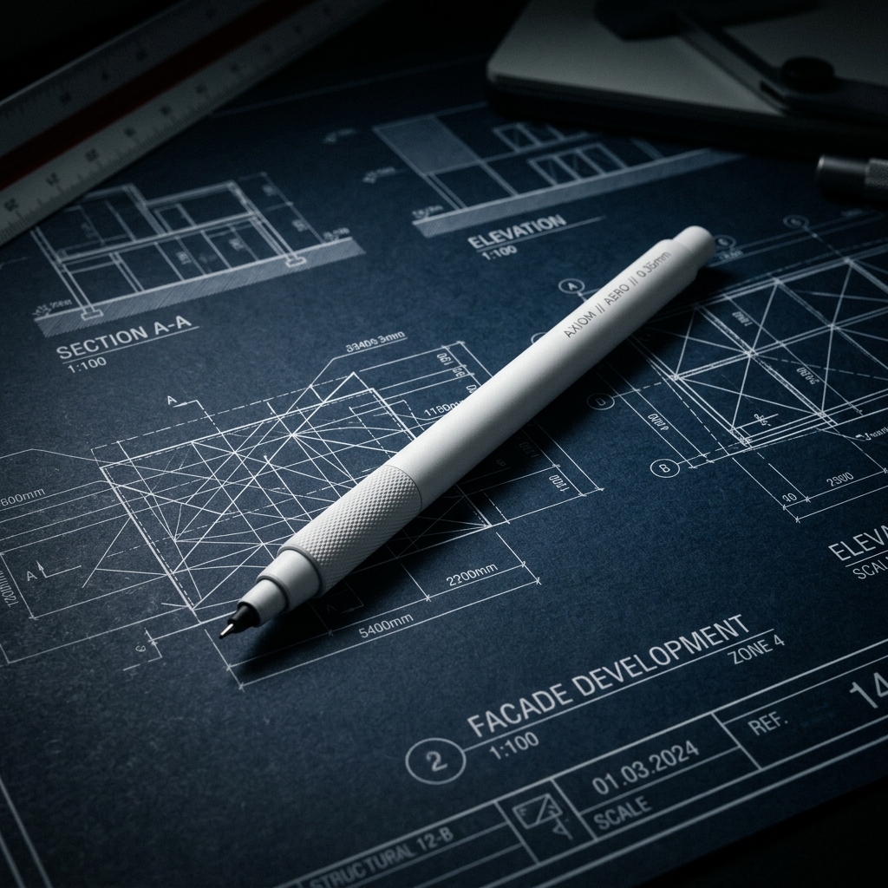

A Artools Precision Pen redefine o equilíbrio entre peso, fluxo e design. Feita para criadores que exigem perfeição em cada traço.

Cada milímetro da Precision Pen foi projetado meticulosamente para oferecer uma experiência de escrita sem atrito, unindo design arquitetônico e performance de estúdio de criação.
Usinada a partir de um bloco único de liga aeronáutica, garantindo leveza absoluta e durabilidade extrema para uso contínuo.
Mecanismo de retração silencioso e fluxo de tinta de precisão nanométrico para traços consistentes e fluidos em qualquer superfície.

O centro de gravidade foi calculado milimetricamente para descansar no arco da mão, anulando a fadiga após horas de traços contínuos.
Peso Total da Liga
Nenhum ruído. Um sistema de amortecimento magnético de neodímio garante que a ponta seja exposta em total silêncio.
A recarga em gel de fabricação alemã dispensa a tinta com tolerância nanométrica, garantindo uma linha preta absoluta, sem falhas ou acúmulos na ponta.
Não é apenas uma caneta. É a extensão direta do seu pensamento. A tinta toca o papel antes mesmo da sua mente processar o traço, garantindo que nenhuma ideia se perca na fricção.